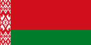
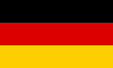
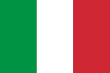
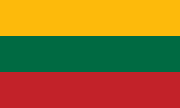
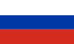
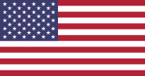

What is iGEM?
The International Genetically Engineered Machine (iGEM) is a
student competition dedicated to the advancement of synthetic biology,
interdisciplinary cooperation and education.
The Team
The TU Dresden has been the patron of several successful and gold-winning iGEM teams.
This year, our team is composed of 13 members from 6 different countries,
with students from all three master's programs of the Center for Molecular and
Cellular Bioengineering (CMCB) and from the Informatics course at the TUD.






